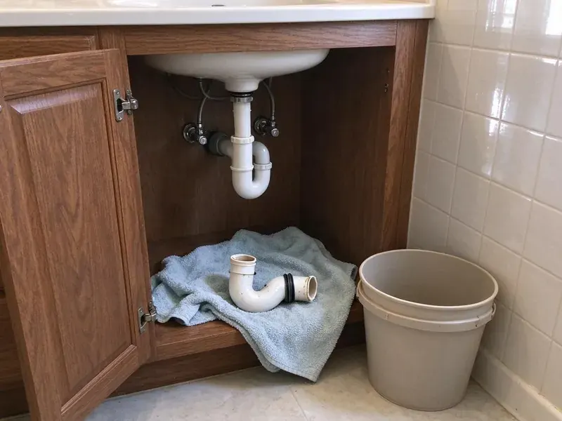

Emergency Plumbing Repair in St. Charles, MO
Water spraying, sewage backing up or a gas smell near the water heater? Our emergency plumbers respond day and night in St. Charles, MO.
- Warrantied Repairs
- Licensed Missouri Plumbers
- Price Before Work
- Live Phone Shutoff Help

Stop the Water and Get Emergency Plumbing Repair in St. Charles, MO.
Our plumbers keep pipe, fittings and tank parts on the truck, so most emergencies get fixed in one visit.
Emergency Plumbing Help for St. Charles, MO Homes
FGV Plumbing handles the plumbing problems that cannot wait until morning. Minutes matter on these. A split line, a ruptured tank or a backed-up sewer can ruin drywall and floors within an hour, which is why we help you shut the water off over the phone first. Then a plumber shows up with the parts to fix it.
Work we handle every week:
- Main line backup clearing with augers, jetters and cameras
- Burst pipe and failed supply line repair with on-truck materials
- Burst pipe repair and freeze prevention

Additional Plumbing Repair Services in St. Charles, MO
We offer expert plumbing repair services across St. Charles, MO to fix leaks, restore flow, and keep your system running smoothly.


Customers
Why Choose FGV Plumbing for Emergency Plumbing Repair in St. Charles, MO?
Our emergency repairs use standard, code-approved parts, not temporary patches, so your system works the way it should afterward.
- Quick Dispatch, We send the nearest plumber, because a split line puts out gallons every minute.
- On Call Every Night, A plumber is on call every night, ready to head to your St. Charles address.
- Jetters and Cameras, We run a sewer camera and a jetter to find and clear what is blocking the main.
Citywide Coverage
Single-family homes, apartments, condos and businesses in St. Charles all get the same emergency response. We work holidays. A pipe that bursts on a holiday soaks the floor just as fast, so our on-call crew works through weekends and holidays.
Experienced Team
The FGV Plumbing crew has handled emergency calls in homes across Missouri. They've seen every kind. A slab leak under the kitchen or a frozen pipe in an outside wall, they have fixed both and know what to check after.
Safety-First Approach
Emergency repairs follow local St. Charles and Missouri plumbing codes like any other job. No shortcuts at night. Every repair gets approved fittings, proper support and a pressure test, so it is safe and passes inspection if required.
Trusted Certified St. Charles Plumbing Services Professionals
At FGV Plumbing, we take pride in licensed, certified plumbing services throughout St. Charles, MO. Credentials matter in this trade. Our plumbers hold recognized industry credentials, and they follow strict safety and quality rules on every repair, installation and maintenance call we run.
Call Us Now PHCC Plumbing Contractor Recognition
PHCC Plumbing Contractor Recognition Better Business Bureau (BBB) Accreditation
Better Business Bureau (BBB) Accreditation Angi Certified Pro
Angi Certified Pro ISO 9001 Quality Management Certification
ISO 9001 Quality Management CertificationEmergency Plumbing Repair Services in St. Charles, MO
Gas Leak Emergency Service in St. Charles
Smell gas? Leave the house first. After you're out and the utility has been called, our licensed plumbers locate the leak, replace the bad fitting or pipe and test everything before turning the gas back on. St. Charles gas work gets tested before relighting.

Sewer Line Backup Emergency in St. Charles
Raw sewage in the house is a health hazard. Don't run any fixtures. We open the cleanout, clear the main and run a camera to see if roots, a sag or a broken pipe caused it, so you know whether you need a repair or a cleaning. St. Charles backups include cleanup.
Commercial Emergency Plumbing in St. Charles
A restaurant with a backed-up floor drain cannot serve. Downtime costs money. From grease line clogs to failed commercial heaters and broken mains, we keep the rest of the building running while one section gets fixed. St. Charles businesses reach us day or night.
Major Leak Detection and Repair in St. Charles
Hidden leaks do their damage before anyone sees them. The water bill usually tips you off. With acoustic sensors and thermal imaging, we find leaks behind walls and under floors and open only the spot over the pipe. Repairs in St. Charles get a pressure test.
Severe Drain Clog Removal in St. Charles, MO
Plungers do not clear grease packed ten feet down the line. A machine does. We run a drain cable for hair and soap clogs in sinks and showers, and a hydro-jetter for grease and sludge in kitchen lines and mains, so water flows at full pipe diameter again. Toilets, tubs and mains in St. Charles, MO are all covered.
Burst Pipe Repair in St. Charles
Pipes in exterior walls, crawlspaces and unheated garages are the usual trouble spots when temperatures drop sharply. We close the main, find the split and cut it out. The repair uses PEX, copper or PVC to match what is in the wall, and we check the pipe on each side of the break for more damage before closing it up. Wet drywall in your St. Charles home gets opened to dry.
Overflowing Toilet Emergency Repair in St. Charles, MO
Water from an overflow soaks flooring and the ceiling below fast. Turn the stop valve. The clog gets cleared, worn fill valves and flappers get replaced, and we check the line past the toilet, replacing the wax ring or toilet if needed. We disinfect the area afterward.

Water Heater Emergency Repair in St. Charles
A failed tank can flood a garage or closet. Shut the inlet on top. After shutting off water and fuel and draining the tank, we decide on repair or replacement, often same-day since common sizes are on the truck. We also repair gas valves, thermocouples, elements and relief valves.
Nearby Emergency Plumbers in St. Charles, MO
Every minute counts with water on the floor. Don't scroll around. FGV Plumbing offers fast emergency plumbing repair across the area, with plumbers who know the streets well enough to find you on the first try.
Someone searching emergency plumbing repair near me needs a plumber who answers and shows up fast. We pick up and roll. Ready day and night, our plumbers bring the tools and parts for most problems, from a split supply line to a backed-up main.
FGV Plumbing at a Glance
- Fully licensed plumbing team covering St. Charles, MO
- Same-day appointments and 24/7 emergency response
- Upfront, flat-rate pricing before work begins
- 4.9-star rated by 307+ Missouri customers
St. Charles Map
St. Charles Information
- Population
- 71,800
- Area codes
- 636/314/573
- Service area
- St. Charles and communities within 40 miles
- Nearby
- St. Peters, Chesterfield, Florissant, O'Fallon
Rapid swings from mild to freezing weather expand and contract pipes and fittings, especially in older homes. Weather like that is behind a lot of split lines, dead water heaters and backed-up drains in St. Charles homes, and a fast shutoff limits the damage.
Expert Services
Call FGV Plumbing for honest, reliable plumbing from people who know the trade in St. Charles, MO.
Our Specialized Plumbing Services in St. Charles, MO
At FGV Plumbing, we handle the full list of plumbing services across St. Charles, MO. We go from leak detection all the way to full system installations, for homes and commercial buildings, and we do it quickly at a fair price. Take a look at our core services below:


How Emergency Plumbing Repair Works in St. Charles, MO
Most emergency calls in St. Charles follow the same steps, start to finish.
Call Right Away
Call (816) 330-2338 the moment you see water. Dispatch gets your address and details and gives you an arrival estimate.
Closest Plumber Sent
The closest emergency plumber in St. Charles is sent out with tools and common parts on board.
Price and Repair
The plumber assesses the damage, explains it and gives you a price. Then the repair gets done.
Frequently Asked Questions About Emergency Plumbing Repair in St. Charles
After-hours dispatch usually runs $150 to $350, plus the repair. Repairs are priced separately. Common emergency repairs such as a burst pipe or clearing a main line usually run $250 to $1,200, and we tell you the number before any work begins so there are no surprises on the invoice.
Yes, our technicians work on all major brands. Parts are on the truck. Rheem, Bradford White and Navien heaters and Moen, Delta, Kohler and American Standard fixtures are all covered, with parts stocked.
Yes, parts and labor on emergency repairs are both warrantied. Terms come first. The tech reviews the coverage before starting so you know exactly what the repair includes.
Yes. We often carry common tank sizes from Bradford White and Rheem so we can swap it that day. If a special size is needed, we can usually install it within a day.
Turn off the water and call a plumber. A clamp buys a little time, but a permanent repair means cutting out the damaged section and installing proper fittings.
Shut off the water, then call. Never touch a gas leak. Working on pressure lines, gas or wiring yourself can make things worse fast, so close the main and call a licensed plumber.
First, turn off the main water valve or the valve to the affected fixture. Water heater leak? Close the cold inlet and cut the gas or power, and if there's a gas smell, get out and call the utility from outside.
Emergency calls go to the top of the list. Timing varies a bit. Volume and distance affect it, but in most cases we have a plumber headed to your address within an hour or two, ready to assess and start the repair.
Hear From Customers Who Hired Our Plumbing Experts

Rachel N.
Hard water was leaving white crust on every faucet and our dishwasher was struggling. The tech tested the water, recommended a softener sized for a family of five, and installed it with a bypass valve in one afternoon. The spots on our glasses are gone.
Water Softener · Ballwin, MO
Laura S.
Our 40 gallon tank started leaking from the bottom after thirteen years. The tech hauled the old one out, set a new unit with a fresh expansion tank, and had hot water running in about four hours. He took the old tank with him too.
Water Heater Replacement · O'Fallon, MO
Greg S.
I manage a small strip center with six tenants. FGV Plumbing handles our annual backflow testing and fixed a recurring clog in the shared sewer line that had been backing into the nail salon. Their reports come in clean and on time.
Commercial Plumbing · O'Fallon, MOMegan L.
Our upstairs tub drained so slowly that every shower turned into a bath. FGV Plumbing pulled a wad of hair out of the stopper and then snaked the line past the trap. Three months later it still drains fast.
Drain Cleaning · St. Peters, MOJessica T.
We were adding a gas range in a kitchen remodel and needed a new line run from the meter. The plumber pulled the permit, ran the pipe through the crawl space, and had it inspected and approved within the week.
Gas Line Repair · Chesterfield, MO
James P.
Our restaurant had a slow leak at the hand sink that was rotting the cabinet base. FGV Plumbing came in at six in the morning before prep, replaced the trap and both supply lines, and was packed up before my first cook clocked in.
Commercial Plumbing · Florissant, MO